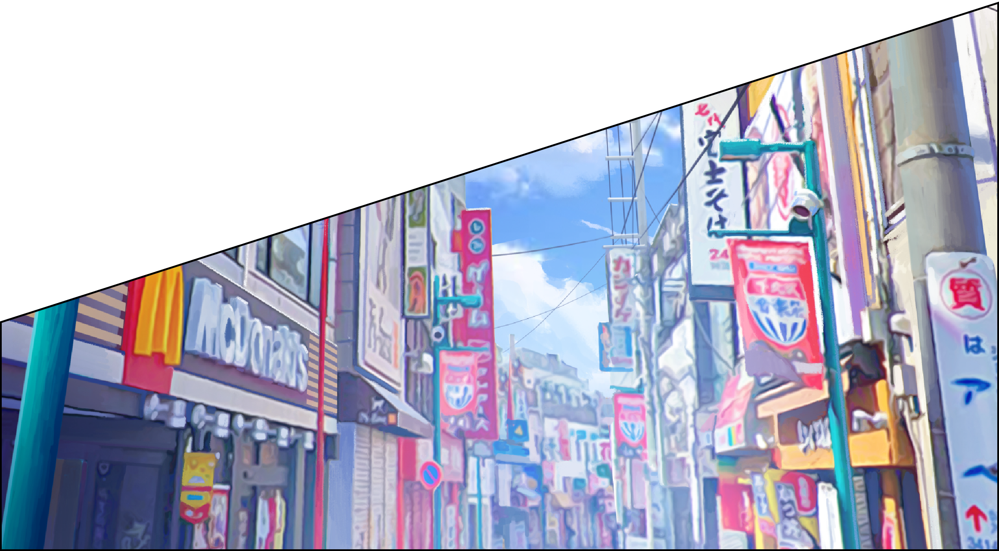
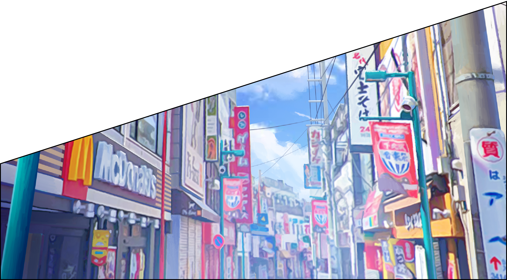
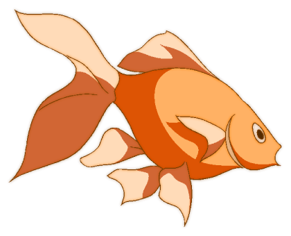
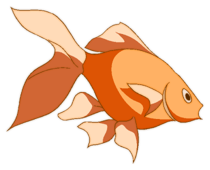
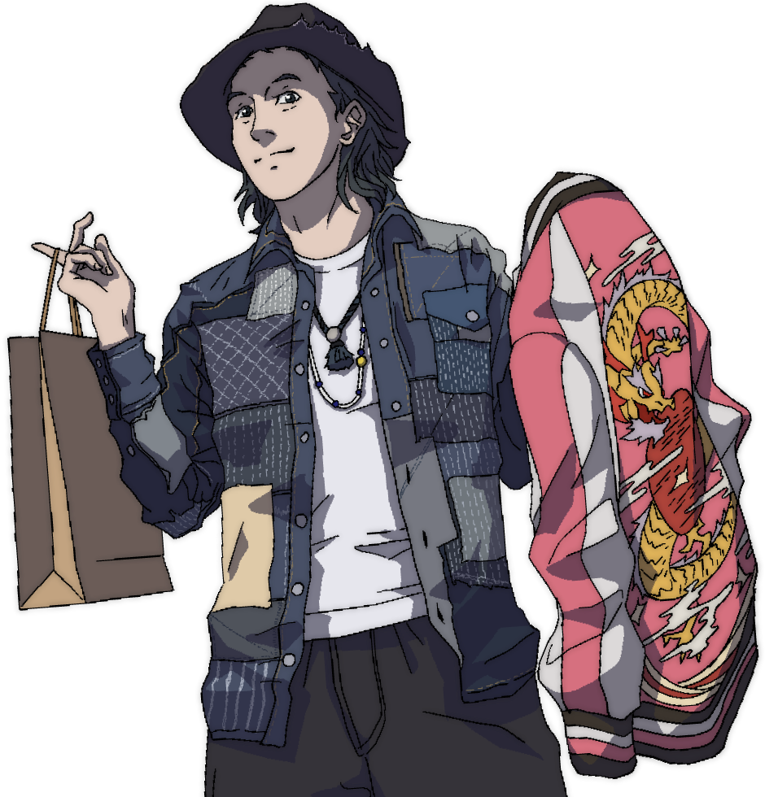
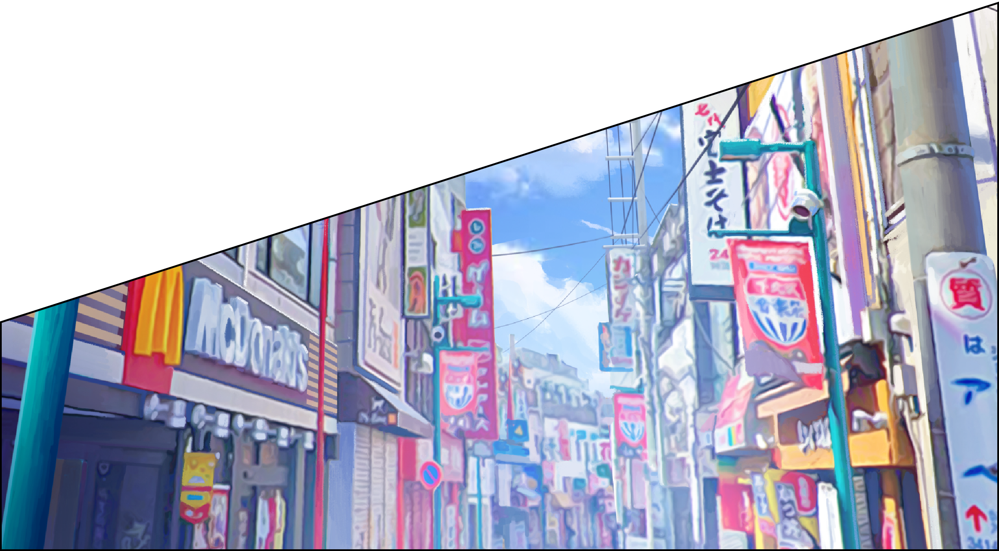
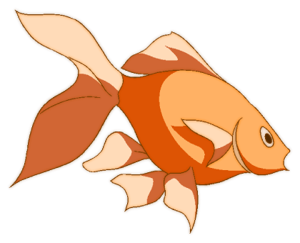

 


More


「做人無夢想，同條鹹魚有咩分別？」這句經典對白終身受用，即使前路充滿未知數，也請盡情發夢！三個故事，三位年青主角，憶起人生第一次日本旅遊的點滴，竟觸動了夢之魂，在幻想空間的日本感受無限可能性，鼓舞他們在現實生活繼續向前邁進。
年輕人起行！看看短片和遊日資訊，觸發你靈感，在千百樣可能性的日本，尋覓你心之所向，重拾內心的鼓動，Let’s
get inspired！
故事前設：Jim, Vivian和 Yat Ho 三人是大學同學，畢業時結伴同遊日本，共創足以回味一生的難忘回憶。